Пятнисто-папулёзная сыпь по всему телу, с участками мацерации и вторичного инфицирования на щеках, волосистой части головы. Расчёсы на задних поверхностях бёдер, руках.
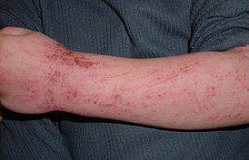
Ветряная оспа
На лице, груди, спине, ягодицах, верхних и нижних конечностях — пятнисто-везикуло-пустулёзная сыпь полиморфного характера, без склонности к слиянию, расчёсы.
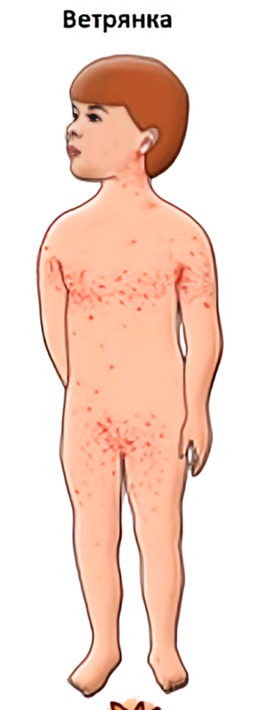
Геморрагический васкулит
В области стоп, голеней и бёдер множественные точечные кровоизлияния, возвышающиеся над кожей и не исчезающие при надавливании, округлой формы диаметром 1-2 мм.
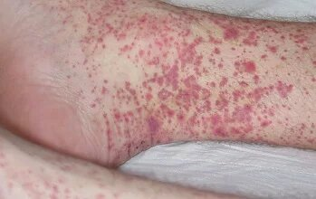
Кольцевидная эритема
В области передней поверхности шеи и грудной клетки высыпания кольцеобразной формы красного/ярко-розового/синюшного цвета.
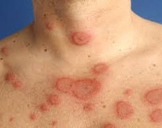
Корь
На коже лица, шеи, груди, спины, верхних конечностях и животе папулёзная сыпь, обильная, без склонности к слиянию. На слизистых оболочках пятна Бельского-Филатова-Коплика.
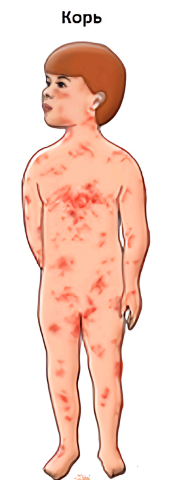
Крапивница
На щеках, передней поверхности шеи — уртикальная сыпь, гиперемирована, с элементами расчёсов. Неправильной формы, в диаметре от 0,5×0,5 до 5,0 см.
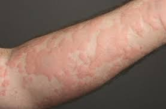
Краснуха
На лице, шее, туловище и конечностях розеолёзные высыпания, не склонные к слиянию, бледно-розового цвета. Заднешейные и затылочные лимфоузлы увеличены, умеренно болезненные при пальпации.
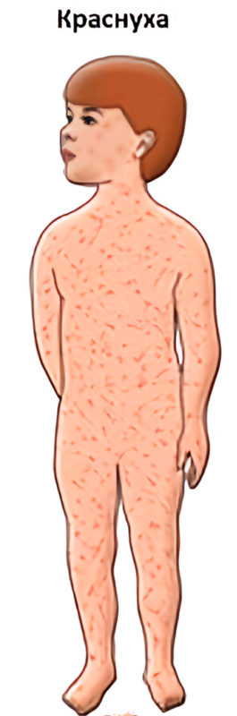
Менингококцемия
В области верхних конечностей, груди, живота и спины сыпь в виде маленьких бледно-розовых пятен, плотных на ощупь, и геморрагических звёздочек неправильной формы, разной величины, не исчезающих при надавливании.
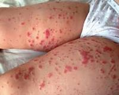
Опоясывающий лишай
В области поражения острый воспалительный кожный процесс. На фоне гиперемии наблюдаются сливные мокнущие корки и эрозии со скудным гнойным отделяемым. Множественные, сгруппированные, несимметричные элементы диаметром 0,2-0,3 мм с полушаровидной морфологией на воспалённой коже.
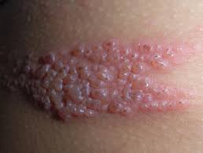
Псориаз
В области поражения равномерные высыпания в виде папул. Сыпь симметричная, мономорфная, представлена папулами и бляшками, покрытыми серебристо-белыми чешуйками. Величина папул от 3 мм до 2 см. Бляшки с ладонь взрослого. Резко ограничены от окружающей здоровой кожи. Цвет красно-розовый. Склонны к слиянию.
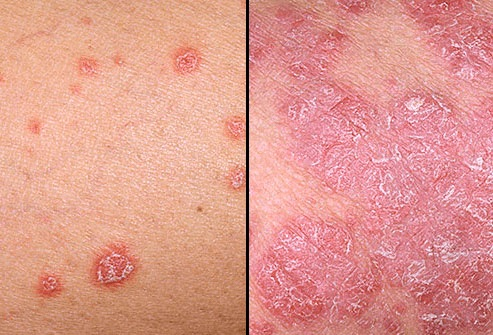
Рожистое воспаление
В области поражения умеренно отёчная эритема с неровными контурами. Область увеличена в объёме за счёт отёка. При пальпации и движении умеренная болезненность. Кожа горячая на ощупь, гиперемирована.
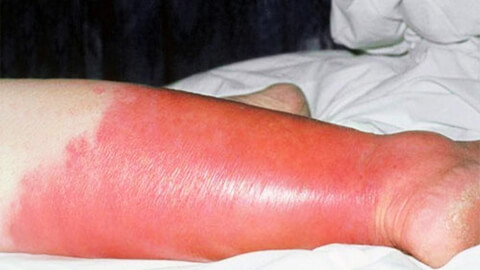
Скарлатина
Яркая разлитая гиперемия миндалин, дужек, язычка, мягкого нёба и задней стенки глотки с резкими границами. На кожных покровах на верхней части туловища экзантема не выражена.
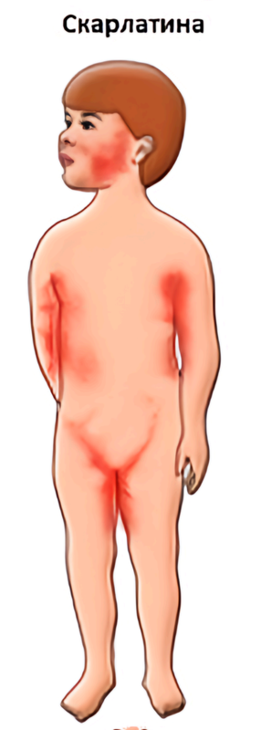
Экзема
Поражение кожи острого воспалительного характера. Первичные элементы: эритема и везикулы. Вторичные: эрозии, чешуйки, корки, трещины. Сыпь симметричная, полиморфная, с нечёткими границами. Пузырьки на фоне отёчной эритемы. Мелкоточечные эрозии. Мелкие корочки от засохших везикул. Отрубевидное шелушение на части элементов. Трещины в складках пальцев с геморрагическими корками. Слизистые оболочки не изменены. Волосы и ногти не поражены.